05 · ¿Cómo somos percibidos?
La imagen que D'Salms desea construir
Es una percepción deseada, no resultados de una encuesta real.
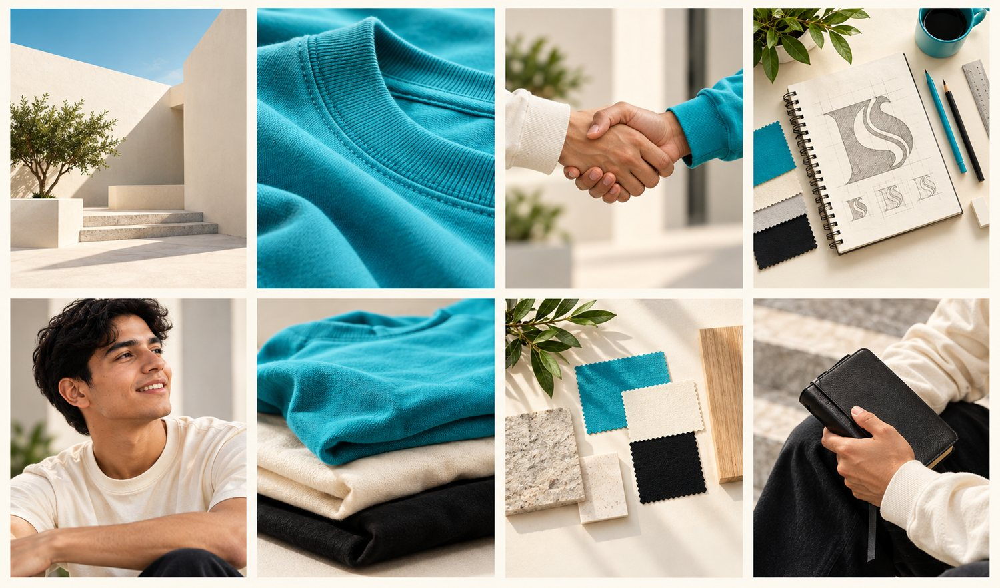
Percepción deseada
Una marca de ropa cristiana moderna, creativa y de calidad, cercana y auténtica, que permite expresar la fe con estilo y naturalidad.
Fortalezas
- Símbolo propio D + S, con potencial independiente
- Tipografía con carácter
- Paleta clara y fresca
- Concepto claro: moda, fe e identidad
Por mejorar
- Área de seguridad, tamaño mínimo y usos incorrectos
- Tipografía complementaria y jerarquía
- Estilo fotográfico y retícula de redes
- Packaging, etiquetas y manual
Dimensiones de la imagen
Marco conceptual; el documento no desarrolla estas dimensiones para D'Salms: [INFORMACIÓN NO ESPECIFICADA EN EL DOCUMENTO].
Componentes de la imagen
01 · Cognitivo
→
Lo que pienso
Información, conocimiento, datos, hechos
02 · Afectivo
→
Lo que siento
Confianza, emoción, simpatía, identificación
03 · Conductual
Lo que hago
Compra, recomendación, interacción, fidelización
Percepción deseada e imagen externa
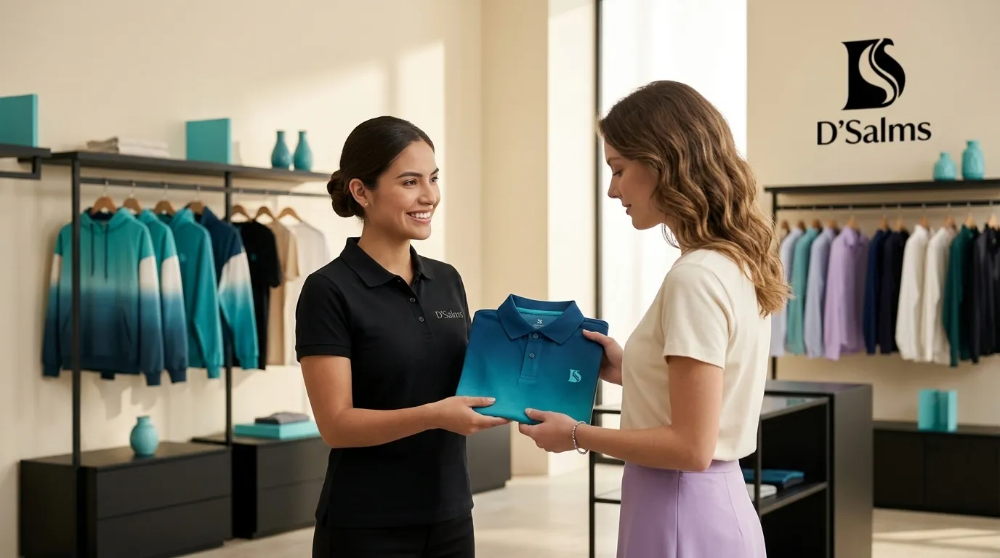

Imagen comercial y digital
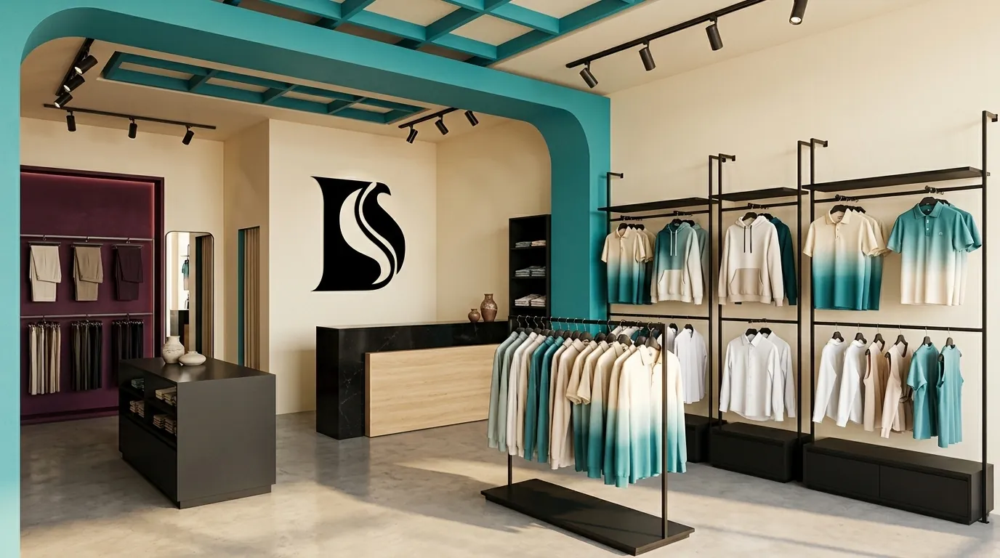


IMAGEN INSTITUCIONAL / ARCHIVO 2026
Una percepción que queremos construir.
Fotografías, diseño y aplicaciones originales del universo visual de D’Salms.
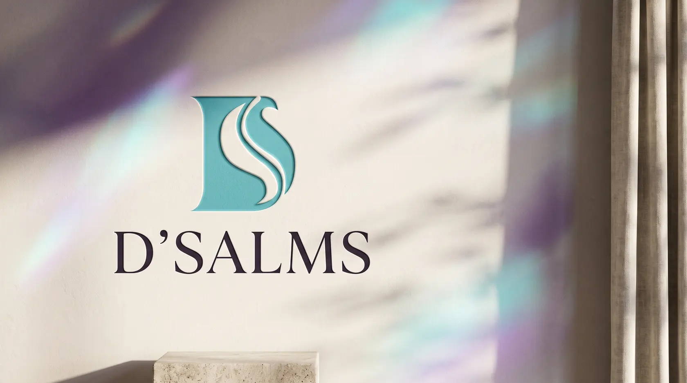
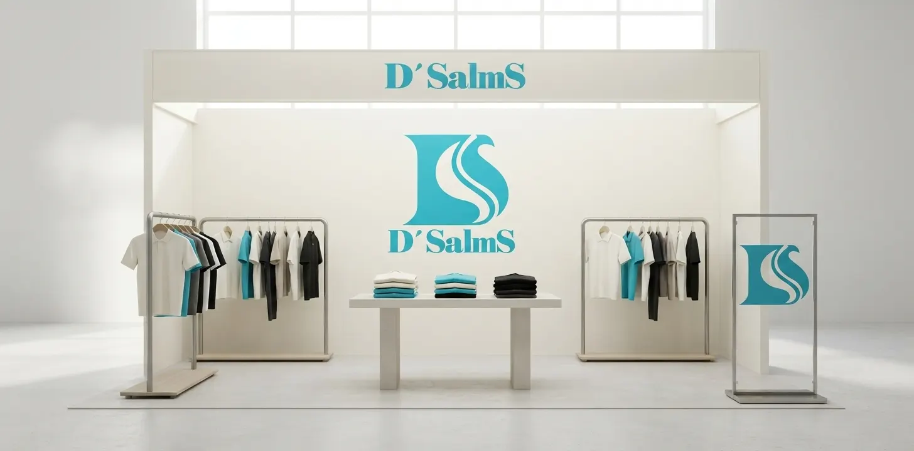
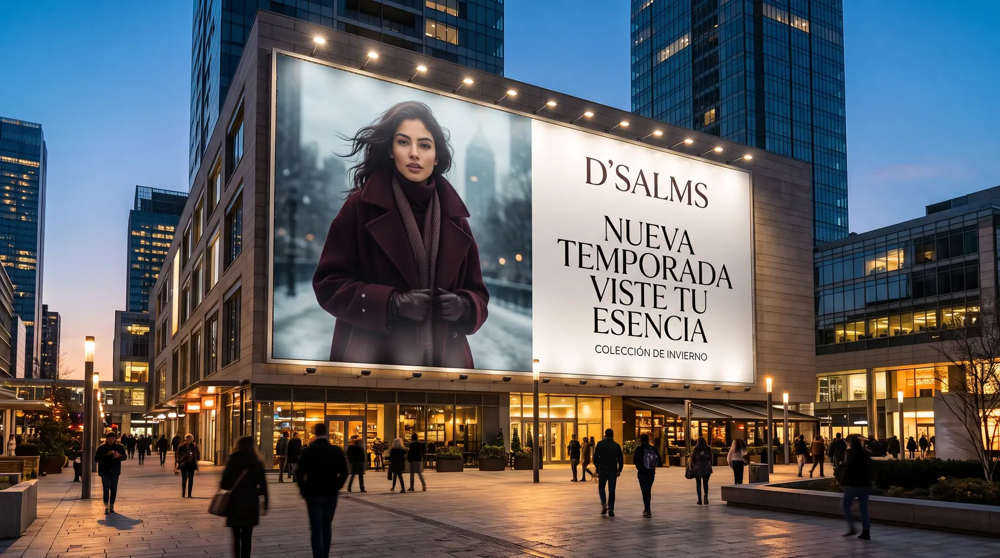
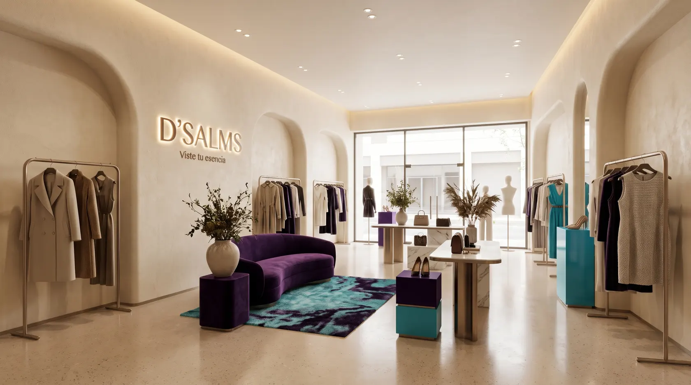
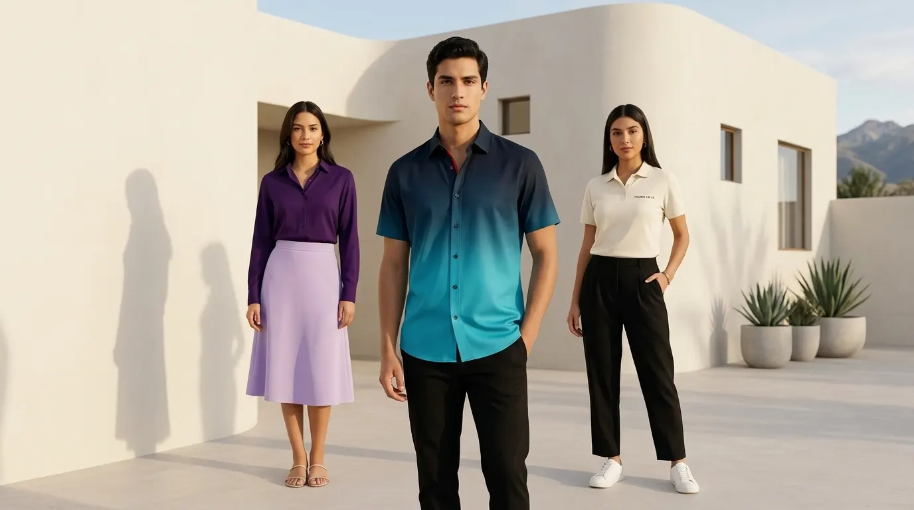
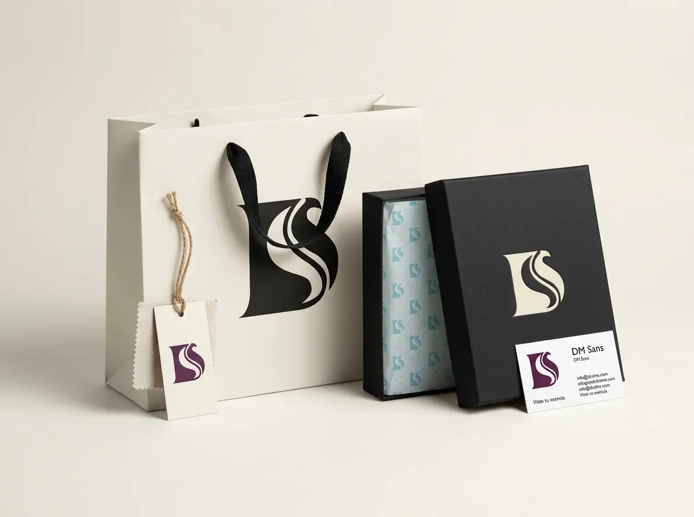
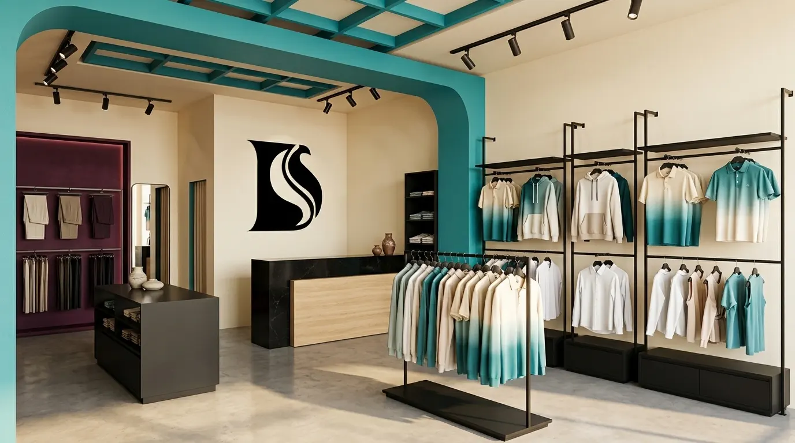
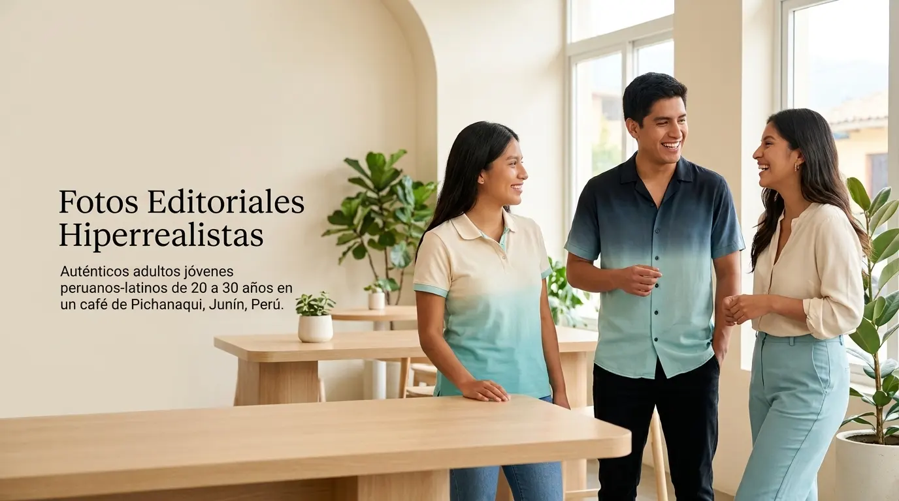
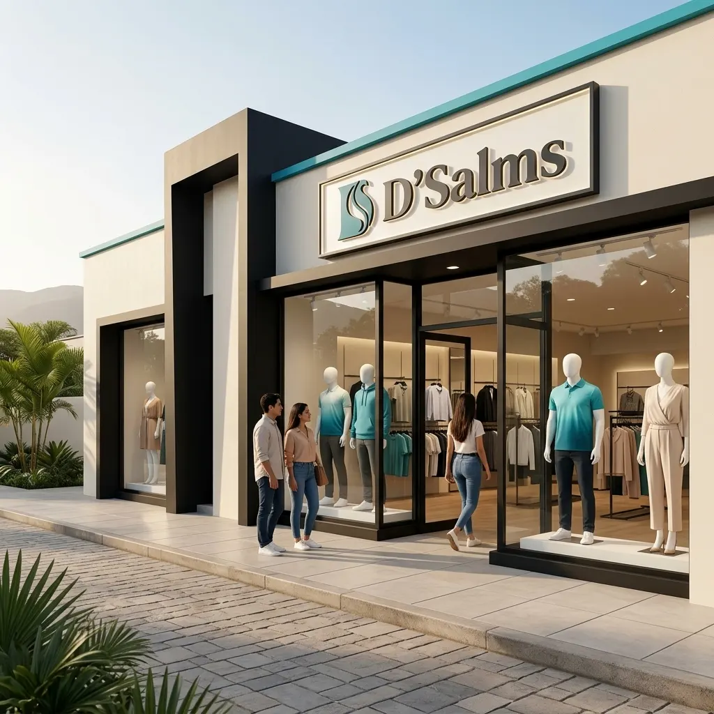